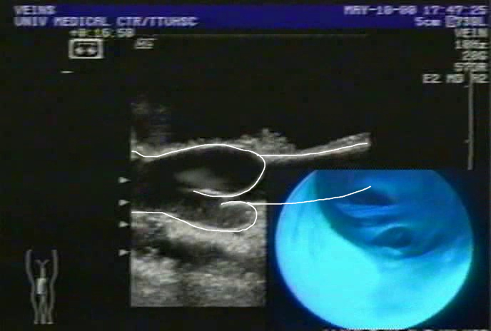
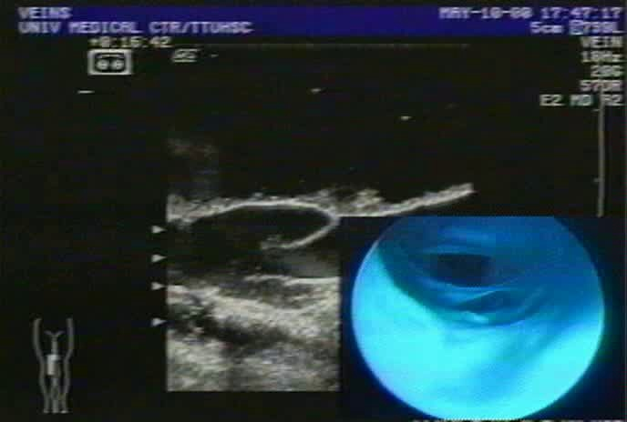
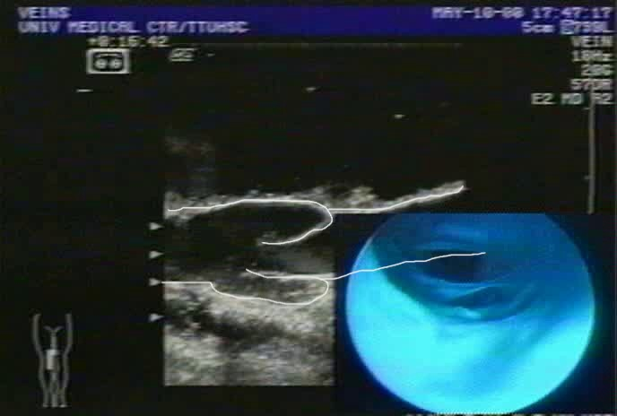
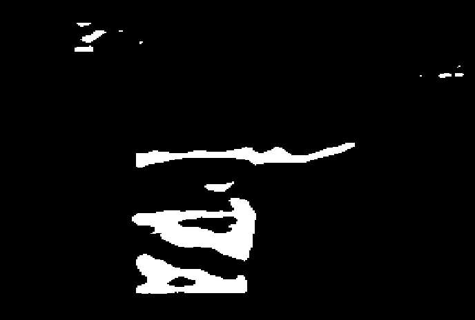
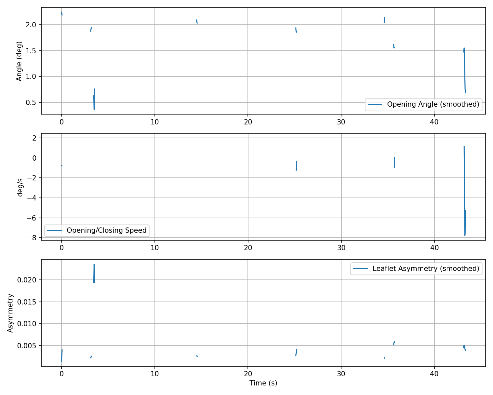
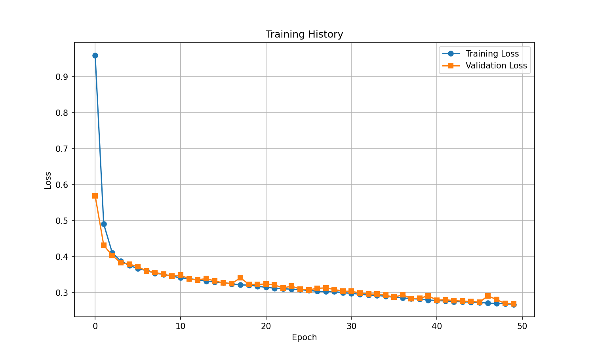

Cadaveric Flow Loop
B-mode sequences acquired from excised venous segments under controlled saline perfusion, capturing cyclic valve opening and closing across ~43 seconds of imaging.
A U-Net computer-vision pipeline that segments valve leaflets in time-resolved B-mode ultrasound, extracts dynamic geometric metrics, and supports downstream hemodynamic modeling for thrombosis risk analysis.

Frame 238 · Manual AnnotationDeep vein thrombosis (DVT) is driven by local hemodynamic conditions — flow stagnation, low wall shear stress, and prolonged residence time. Venous valve geometry critically shapes these patterns, yet clinical assessment still relies on manual ultrasound interpretation that is slow, operator-dependent, and poorly suited for large-scale analysis.
B-mode sequences acquired from excised venous segments under controlled saline perfusion, capturing cyclic valve opening and closing across ~43 seconds of imaging.
Expert tracings on selected frames spanning the full valve cycle — a representative subset of thousands of frames, prioritized for diverse leaflet configurations.
A fully convolutional encoder–decoder trained with Dice + BCE loss, data augmentation, and validation-based checkpointing to generalize across variable image quality.
Frame-by-frame extraction of leaflet opening angle, leaflet length, asymmetry, angular speed, and open/close timing from predicted segmentation masks.
From raw ultrasound video to geometric metrics and 3D STL geometry — five stages that transform clinical imaging into quantitative, reproducible measurements.
Sample B-mode video into individual JPEG frames at native resolution (688×464).
Hand-trace leaflet boundaries; convert white-line overlays to binary training masks.
Segment valve edges with augmented training, validation split, and best-checkpoint saving.
Run inference on every frame of the full sequence; export per-frame binary masks.
Compute opening angle, asymmetry, speed, and cycle timing; generate plots and CSV.
Manual white-line tracings on selected frames provide ground truth for training. The model then segments the full 1,311-frame sequence automatically.

frame_0000.jpg

masks_annotated/

predicted_masks/
Geometric metrics computed across the full sequence reveal cyclic opening and closing behavior correlated with imposed flow conditions.

Opening angle, angular speed, and leaflet asymmetry tracked across the full sequence
(valve_motion_analysis.py).

Training history from U-Net segmentation (train_valve_features.py).
Python scripts with editable configuration at the top. Install dependencies, then follow the workflow below.
PyTorch, OpenCV, scikit-image, and supporting libraries.
Pull individual frames from Ultrasound_Venous_Valve.avi into images/.
Threshold hand-drawn white lines in masks_annotated/ to training labels.
Full training loop with augmentation, validation metrics, and checkpoint saving.
Run inference on the full video, then extract temporal geometric metrics.
Reconstruct volumetric vein models from mask stacks or parameterized CSV profiles.
UNetEdgeDetector — shared encoder–decoder architecture used by all training and inference scripts.
Primary training script: Dice+BCE loss, augmentation, IoU/Dice metrics, learning-rate scheduling.
Batch inference over video frames; exports per-frame binary masks and metadata JSON.
Skeleton-based keypoint tracking, opening angle, asymmetry, speed, and cycle timing.
FEDSM 2026 — Using Computer Vision to Automate Venous Valve Geometry Feature Extraction from Ultrasound Images for Thrombus Risk Analysis.
Moreau Catholic High School
Casady School
Texas A&M University
Texas A&M University at Kingsville
Texas A&M University at Kingsville
DeepVein Inc.
DeepVein Inc.